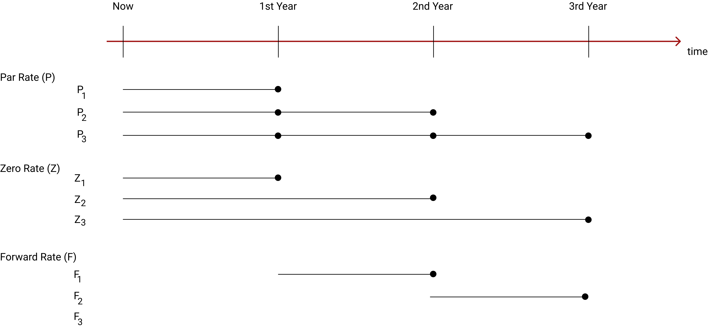

Par Rates, Zero Rates and Forward Rates
The concept of par rates, zero rates, forward rates and bootstrapping technique is vital for understanding bond pricing and valuation. In this article, we will be discussing Par Rates, Zero Rates and Forward Rates. In a subsequent article, we shall discuss the concept of Bootstrapping. The following paragraphs describe these terms.
Par Rates
It refers to a periodic rate that is accrued and is paid periodically until maturity. For example, if a bond has a maturity of 3 years with a par rate of 5%, it means that the bond will pay 5% every year for the next three years. If the bond is issued at par, then the par rate and coupon rate is the same.
For the purpose of calculations, we denote the par rate as 'P' and its maturity as a subscript to P. For example, P
1 would mean 1 year par rate, P
2 would mean 2 years par rate, and so on.
Zero Rates
It refers to an interest rate that accures, accumulates or compounds and is paid as a single payment on maturity. Zero rate is also known as the spot rate. We will use the term Zero rate and avoid using the term "Spot Rate" because the term Spot Rate is also used in Forex, which has nothing to do with interest rate.
For the purpose of calculations, we denote the forward rate as F and its maturity as its subscrit, similar to what we described above for par rates and zero rates.
The following diagram shows the nature of these rates. The dots denote the time of interest payment.

Rate vs Return
For a better understanding of the par rates, zero rates, forward rates and their relationship, we must first understand the concept of rate and return.
Interest rate is different from return. To understand this, let's take an example of a rental property. Assume that we own a house worth Rs. 10 lakhs and we let out the house on rent on 1st Jan 2020 for a period of 3 years on a yearly rent of Rs. 60,000 (rent is paid once yearly at the end of the year, that means, we receive rent of Rs. 60,000 on 31st Dec 2020, Rs. 60,000 on 31st Dec 2021 and Rs. 60,000 on 31st Dec 2022, and after that the house is vacated by our tenant). The question is: Is the Rs. 60,000 that we receive every year for the next three years our return? The answer is No. In finance, return has a very specific meaning. It should have the following features.
- It must be expressed as a rate per annum
- It should consider only the initial outflow at the beginning and the final outflow at maturity. If there are any periodic incomes before maturity, they are considered as reinvested until maturity
- If the maturity is more than one year, compounding is applied
The Rs. 60,000 that we receive as rent is our income. It would be wrong to say that we made 6% return. To find the return, we may consider what we do with our income. Let's further assume that we invested the Rs. 60,000 that we received as rent on 31st Dec 2020 in a 5% fixed deposit for the next two years. Similarly, we reinvested the Rs. 60,000 that we reinvested as rent on 31st Dec 2021 in a 5% fixed deposit for one year. What we do with the rent that we received on 31st Dec 2022 is immaterial for our return calculation as we reached the maturity. With the above information, we can say that the total amount that we made from renting the house is as follows.
Total interest amount received = Rs. 60,000 (first year) + Rs. 60,000 (second year) + Rs. 60,000 (third year) + Rs. 6,150 (interest on our first fixed deposit) + Rs. 3,000 (interest on our second fixed deposit) = Rs. 1,89,150.
Now, consider as if we have invested Rs. 10 lakhs in our house and received Rs. 11,89,150 after three years. Using this information, we can compute the return by using the following formula.
\[
Return = \left[{\left({F \over P}\right)^{1 \over {N X M}}} - 1 \right] \; \text x \; M
\]
where,
F = Final amount received at maturity
P = Initial amount invested
N = Number of periods to maturity in years
M = Compounding frequency for return
By applying the above formula, the following is our return calculation.
\[
Return = \left[{\left({11,89,150 \over 10,00,000}\right)^{1 \over {3 X 1}}} - 1 \right] \; \text x \; 1 => or \; Return = 5.944 \text %
\]
Notice the following:
- Our return is less than 6%. The reason is that we have been investing our income in a fixed deposit which is yielding us less than 6%. Therefore, the overall return that we made has reduced.
- In general, the difference between par rate and zero rate is very less (usually, in decimals). For a small individual investor the difference may not matter at all. For institutional investors, this difference matters as the amount invested is large. Also, for pricing and valuation purposes we use the zero rates instead of par rates. Therefore, the zero rates need to be calculated.
With the above understanding of the concept of rate vs return, let's understand their importance and relationship.
Relationship between Par Rates, Zero Rates and Forward Rates
In the market, issuers and dealers often quote par rates. They do not quote zero rates. If we had zero rate instruments of different credit quality for all tenors then we could have used them for comparison, pricing and valuation of other instruments. However, zero rate instruments are relatively rare because investors prefer to get some returns periodically. They would not like to invest in say 5 or 10 year bond and wait till maturity to get their interest and principal. They do not mind waiting to get their principal back but they would prefer to get periodic interest. We have par rates for instruments but not their zero rates. As discussed earlier, par rates are not returns, they are incomes. Therefore, we need to compute zero rates from th par rates and forward rates. There is no direct formula to compute the zero rates for different periods. We need to extract the zero rates one period at a time, a process known as "Boot Strapping".
Let's us consider a 3 year investment of one unit of capital. We can do the investment in the following three ways.
A) Invest today in a 3 year zero coupon bond (ZCB). The maturity proceeds will be (1+Z)
3.
B) Invest today in a 2 year zero coupon bond (ZCB) and for the last year enter into a forward contract to lock in the interest. Notation wise, the last year forward contract would be F
2,3 meaning the rate is applicable from the end of 2nd year till end of 3rd year. In otherwords, the proceeds from 2 year ZCB will be invested in F
2,3 rate.
C) Invest today in a 1 year ZCB. The proceeds of the 1 year ZCB can be invested by locking in a forward rate for the second year F
1,2. Similarly, the proceeds at the end of 2nd year can be invested by locking in a forward rate for the third year F
2,3.
The cash flows from the three strategies can be as follows.
| Strategy |
Cash flows at 1 year |
Cash flows at 2 year |
Cash flows at 3 year |
| A |
- |
- |
(1+Z3)3 |
| B |
- |
(1+Z2)2 |
(1+Z2)2 x (1+F2,3)1 |
| C |
(1+Z1)1 |
(1+Z1)1 x (1+F1,2)1 |
(1+Z1)1 x (1+F1,2)1 x (1+F2,3)1 |
Since all the three strategies (A, B and C) are equal, the cash flows must be equal. Symbolically,
\[
(1+Z_3)^3 = (1+Z_2)^2 \; \text x \; (1+F_{2,3})^1 = (1+Z_1)^1 \; \text x \; (1+F_{1,2})^1 \; \text x \; (1+F_{2,3})^1
\]
As we can see, the zero rates are the geometric average of the successive forward rates. Similarly, it can also be found (though prooof not provided here) that the par rates are geometric average of the successive zeror rates, such that:
\[
(1+P_3)^3 = (1+Z_1)^1 \; \text x \; (1+Z_2)^1 \; \text x \; (1+Z_3)^1
\]
Among these three rates, the zero rate is the return on an investment because the interest amounts are accumulated, compounded and paid as a bullet payment, along with principal, on maturity. The value of any financial instrument is the discounted sum of its cash flows, discounting being done at a
particular rate of return. The discounting rate, thus, needs to be the return measure which is the zero rate applicable to the timing and credit quality of the cash flow or instrument. Thus, a 3 year AA bond should be priced using the AA credit curve of zero rates, a 5 year AAA bond should be priced using the AAA credit curve of zero rates, and so on.
As discussed earlier, there is no direct formula to get the zero rates from par rates or forward rates. We need to extract them for one period at a time, a proces known as 'Boot Strapping'. We shall discuss that in an separate article.
END OF MY NOTES